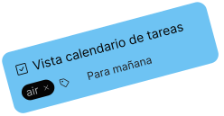
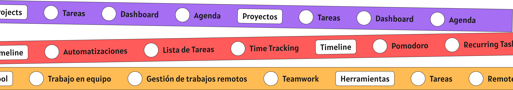
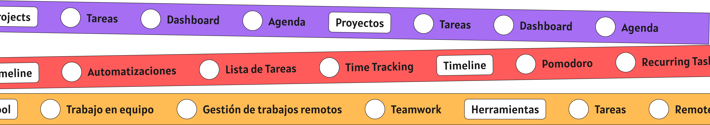

Organiza fácilmente tu trabajo.
Misión
Procratination Nightmare ayuda a las personas a ser más productivas y organizadas en su vida diaria. brindamos herramientas y soluciones innovadoras para que poder administrar mejor las tareas, proyectos y objetivos personales y profesionales.
Visión
Soñamos con ser el líder mundial en el mercado de seguimiento de tareas, al ofrecer las mejores soluciones y herramientas de productividad para individuos y empresas. Queremos ayudar a millones de personas a alcanzar sus metas y objetivos, haciendo que su vida sea más fácil y organizada.
Gana el control de tus días.
 Detén las prisas - centraliza, prioriza y avanza en proyectos a través de aplicaciones diariamente.
Detén las prisas - centraliza, prioriza y avanza en proyectos a través de aplicaciones diariamente.

Detén las prisas - centraliza, prioriza y avanza en proyectos a través de aplicaciones diariamente.


 
